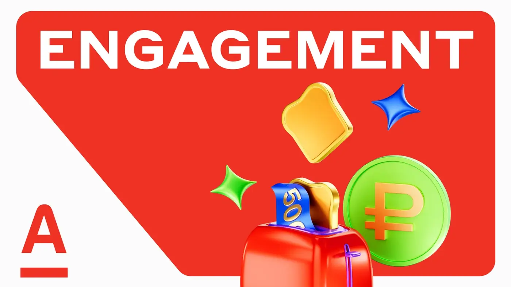
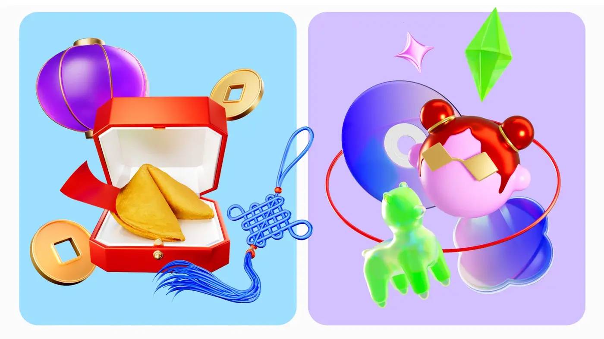
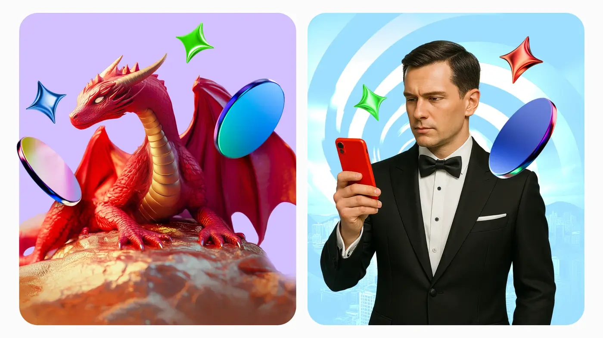

Привлечь новых пользователей в инвестиции
Контент должен был не ограничиваться информированием, а формировать интерес к продукту, стимулировать дальнейшие продажи и вести разные сегменты аудитории к целевым действиям.
CRM · Content marketing · Alfa Bank
Контент-система для брокера, которая не просто сообщает, а вовлекает, формирует новые клиентские сценарии и ведёт к целевым действиям.
О проекте
Команда формулировала гипотезы и через контент создавала новые клиентские сценарии: от первого интереса к инвестициям до целевых действий внутри продукта.
За полгода было создано более 200 единиц контента по 20 направлениям для разных аудиторий и продуктов. CTR вырос в три раза.
CASE BREAKDOWN / CRM & CONTENT
Контент должен был не ограничиваться информированием, а формировать интерес к продукту, стимулировать дальнейшие продажи и вести разные сегменты аудитории к целевым действиям.
В систему вошли энгейджмент-контент, триггерные коммуникации и персонализированные охватные сообщения. Для каждого формата команда формулировала гипотезы и собирала новые клиентские сценарии.
За полгода были разработаны материалы для разных аудиторий и продуктов: пуши, баннеры, email-коммуникации и контентные форматы с единым визуальным и редакционным принципом.
CTR вырос в три раза и достигал 37%. Конверсия в целевые действия в триггерных коммуникациях выросла в среднем на 8%, а у аудитории, которая читала энгейджмент-контент, бизнес-метрики выросли на 217%.


